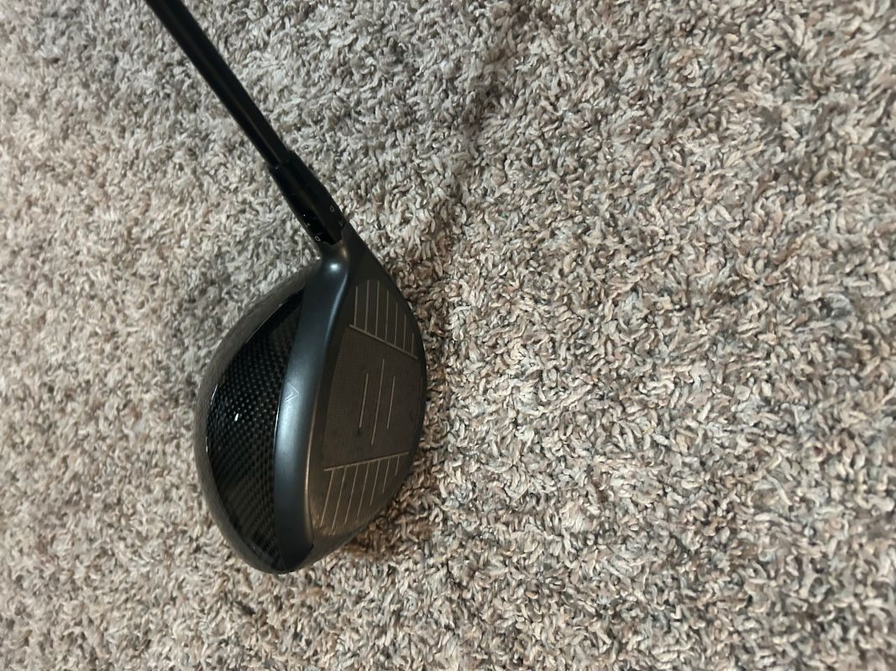
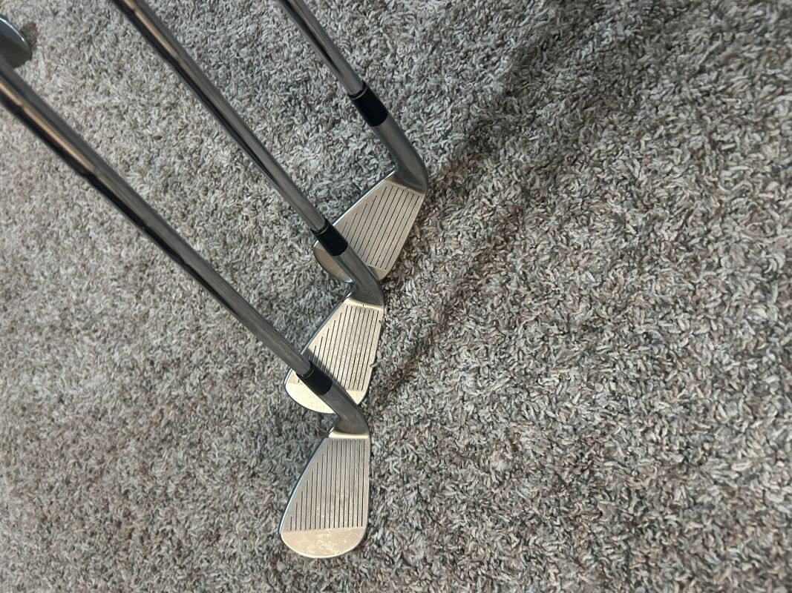
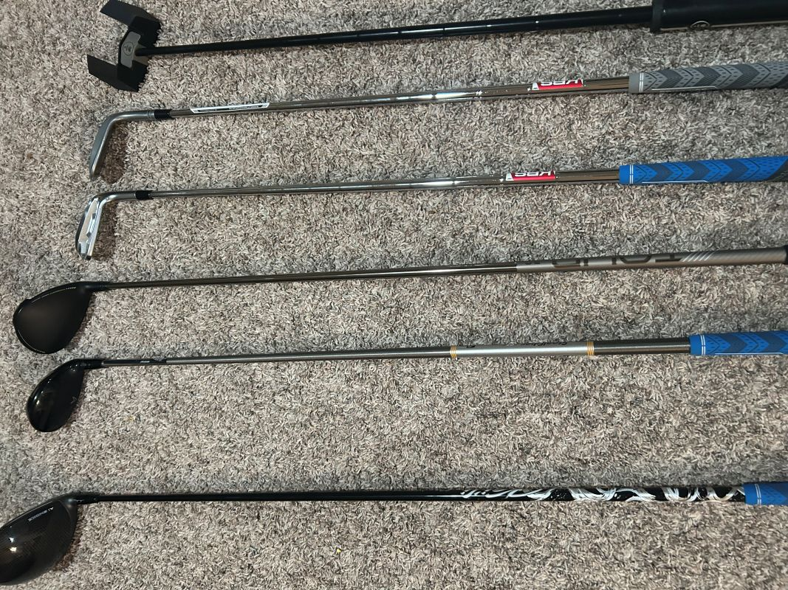
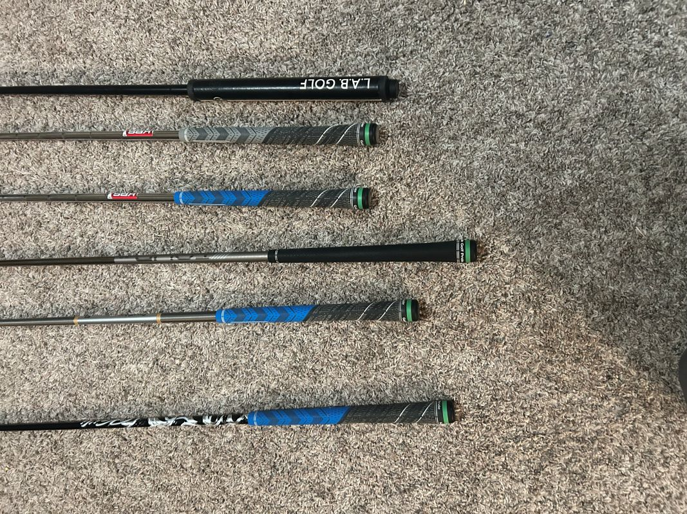

Club Components Overview
Understanding golf club components helps you make informed decisions about equipment that suits your game.
Head
Golf club heads are different depending on the type of club. Drivers, fairway woods, and hybrids have a roll across the face to help with sidespin. They are made out of light metals such as titanium.
Golf irons and wedges have flat heads and have grooves across the face. This helps to create spin to either stop the ball or make it roll more depending on the swing.
Putters have flat heads with minimal loft. They can be flat and smooth or have some types of grooves on them depending on what the golfer needs.


Shafts
Shafts are dependent on the club and player. Drivers, fairway woods, and hybrids normally have graphite shafts. Irons and wedges normally have steel shafts, but graphite shafts have become more commonplace.
Shafts have many different qualities, such as flex, kickpoint, and weight. These are all determined based on the golfer's swing and what attributes complement the golfer.

Grips
Grips are what connect the golfer to the golf club. They can be made of various materials such as rubber, synthetic materials, and leather. They have various textures. Grip size is usually based on the size of your hands. Sometimes wraps are put under grips to better fit players.
